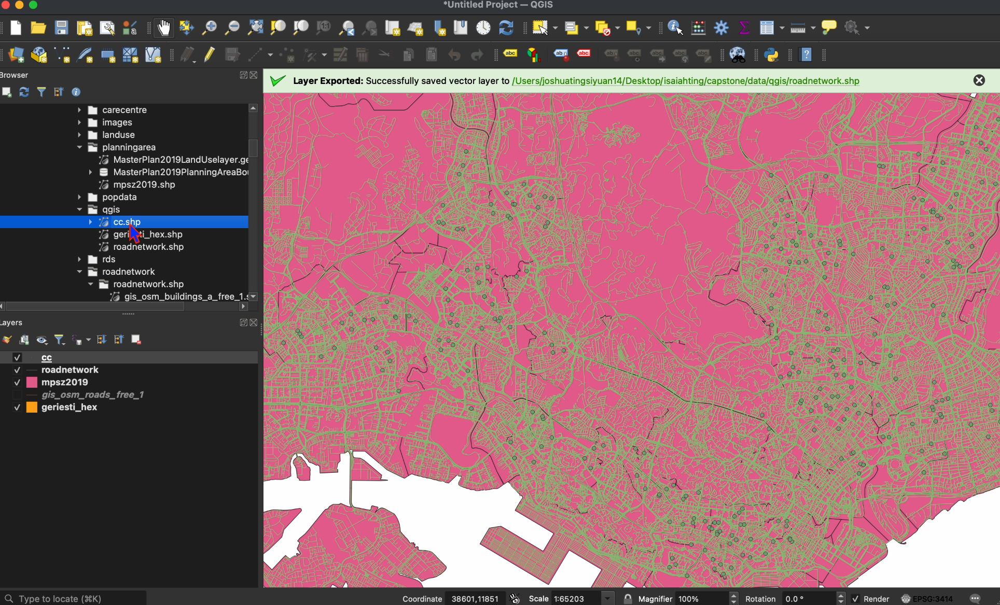

pacman::p_load(sf, tidyverse, SpatialAcc, reshape2, tmap, ggstatsplot, moments)Accessibility of Active Ageing Centre
1 Active Ageing Centre
1.1 Overview
This chapter covers pre-requisite preparation prior to the analysis alongside the analysis and its results.
1.2 Preparation
1.2.1 Installing Packages
| Package | Description |
|---|---|
| sf | For importing, managing, and handling geospatial data |
| tidyverse | For non-spatial data wrangling that includes dplyr, tibble, ggplot2, readr, tidyr, stringr, forcats, lubridate and purr |
| SpatialAcc | For modelling spatial accessibility |
| tmap | For creating elegent and cartographic quality thematic maps |
| ggstatsplot | For statistical analysis and plotting |
The below code chunk installs and loads the abovementioned packages for this analysis.
1.2.2 Importing Data
The file of the estimated population from 2025 to 2029 together with the hexagon layer is imported.
| Name | Details |
geriesti_hex |
|
acc_sf |
|
mpsz |
Singapore Master Plan 2019 Planning Subzone Boundary |
roadnetwork |
Road network of Singapore, Malaysia, Brunei chosen over as data.giv has only road centre line |
1.2.2.1 Singapore Master Plan 2019 Planning Subzone Boundary
mpsz = st_read(dsn = "data/planningarea/",
layer = "mpsz2019")1.2.2.2 Road Network
roadnetwork = st_read(dsn = "data/roadnetwork/roadnetwork.shp/",
layer = "gis_osm_roads_free_1")1.2.2.3 Estimated Senior Population with Hexagons Spatial Dataset
For the below code chunk, we will first read the spatial dataset, geriesti_hex and dropped the irrelevant columns.
geriesti_hex = read_rds("data/rds/mpsz/geriesti_hex_2025.rds") %>%
mutate(sz_upper = toupper(sz)) %>% # Create uppercase version of sz
left_join(
mpsz %>%
st_drop_geometry() %>% # Remove geometry to avoid conflicts
select(SUBZONE_N, REGION_N) %>%
mutate(SUBZONE_N_upper = toupper(SUBZONE_N)), # Create uppercase version of SUBZONE_N
by = c("sz_upper" = "SUBZONE_N_upper")
) %>%
select(-c('SUBZONE_N.x', 'SUBZONE_N.y', 'subzone_clean', 'SUBZONE_N', 'sz_upper'))Following, we use st_write() function from the package sf to save geriesti_hex to a file. it writes into “data/qgis” directory, creating a layer named “geriesti_hex”, and saving it in the ESRI Shapefile format for QGIS later on.
st_write(geriesti_hex, dsn = "data/qgis", layer = "geriesti_hex", driver = "ESRI Shapefile")1.2.2.4 Active Ageing Centre (AAC) Spatial Dataset
Similar to the above code chunk, we will read the spatial dataset, cc_sf , then we will filter to AACs only. We will add a new column capacity where we will set the demand to 3000 seniors per AAC. Following which dropped the irrelevant columns in addition we use unnest() from the tidyverse package to convert the care centres column from list to column.
aac_sf = read_rds("data/rds/carecentre/refined/cc_sf.rds") %>%
filter(aac == 1) %>%
mutate(capacity = 3000) %>%
select(-c(postal_found, latitude_wgs84, longitude_wgs84)) %>%
unnest(3:11) #converts from list to columnThereafter, we will save cc_sf to a file for QGIS analysis.
st_write(aac_sf, dsn = "data/qgis", layer = "aac", driver = "ESRI Shapefile")1.2.3 Data Preparation using QGIS
1.2.3.1 Step 1: Adding geriesti_hex layer
Firstly, locate the file to be be added as a layer. Then, drag and drop the file into the empty white space. The layer will appear as shown below.

geriesti_hex layer1.2.3.2 Step 2: Ensuring Correct CRS
We will right click on the geriesti_hex layer and click onto Properties.

In the below picture, we can see that the correct CRS (EPSG: 3414 - SVY21 / Singapore TM) is assigned.
1.2.3.3 Step 3: Adding Road Network Layer
Similar to Step 1, we will drag and drop the gis_osm_roads_free_1.shp into the layer.
1.2.3.4 Step 4: Adding Master Plan Subzone Boundary
Similar to Step 1, we will drag and drop the mpsz2019.shp into the layer.

mpsz2019 Layer1.2.3.5 Step 5: Clipping Road Network
As the road network layer consists of the Singapore, Malaysia and Brunei, we would need to clip it to only Singapore’s roads. We select Vector -> Geoprocessing Tools -> Clip.

The input layer will be gis_osm_roads_free_1 while the overlay layer is mpsz2019. This ensures that the gis_osm_roads_free_1 is trimmed according to the boundaries of Singapore, alias mpsz2019. We will click onto the tool button.

Under invalid feature filtering, we will choose “Do Not Filter’.

The below is the output of the clipped road network named as Clipped.

1.2.3.6 Step 6: Exporting Road Network
We will right clicked onto the layer Clipped, select Export -> Save Feature As....
In the format, we will select GeoPackage, selecting the appropriate location and naming the file.

Final output of roadnetwork of Singapore is seen below.
Lastly, we will remove the Clipped layer as it is redundant. We will right clicked and select Remove Layer.

Clipped Layer1.2.3.7 Step 7: Adding AAC Layer
First, Drag and drop the cc.shp into the map. This will be the Destination.

1.2.3.8 Step 8: Creating Centroids
Next, we will select Vector -> Geometry Tools -> Centroids in creating the centroids of the projected population. This will be the Origin.

For the parameters, ensure the layer with the hexagons is chosen, in this instance, geriesti_hex.

1.2.3.9 Step 9: Exporting Centroids as Shapefile
After running the previous step, you will be able to see the Centroids. Next, we will export the layer as a ShapeFile and save it.

In this step, ensure that the file’s format is set to ESRI Shapefile and the CRS is correct, then click onto OK to export. The file will be saved in the desired destination.
1.3 Computing Distance Matrix
This section will cover two different approaches in computing the distance matrix of centroids of the hexagons and AAC. The first approach uses the Network distance while the latter consists of using Euclidean Distance. The Manhatten distance utilises the road network of Singapore to compute while the Euclidean distance is a fly-by distance from the centroid to the AAC.
1.3.1 Network Distance
In this subsection, the distance matrix was computed using the Road Network data on QGIS. The Road Nework serves as a link whereas the origin (centroids) and destination (AAC) are nodes. Owing to its sophisticated computational abilities in relation to geospatial analysis, QGIS is used over R Studio. The steps are laid in this section.
1.3.1.1 Step 1: Selecting Distance Matrix
Using the same project from the above steps, click Vector -> Analysis Tools -> Distance Matrix.
1.3.1.2 Step 2: Selecting Parameters
The input point layer will be the centroid_hex while the input unique ID filed is the hex_id.
The target point layer will be the Active Ageing Centre (cc) and the unique ID field will be the name. We will then set the output matrix to be Standard (N x T) Distance Matrix and run it.

1.3.1.3 Step 3: Checking Distance Matrix Table
After running it, the new layer “Distance_matrix” will appear. Right click and Open Attritube Table in ensuring that there are no errors or missing values.
The attribute layer appears appropriate. The columns are the names of the Active Ageing Centres while the rows are the Hexagons IDs.

1.3.1.4 Step 4: Exporting Distance Matrix
As we would like to the distance matrix table as a CSV file, we would need to right click the Distance_matrix layer and select Export-> Save Features As....
1.3.1.5 Step 7: Saving as CSV File
Ensure that the format is in Comma Separated Value (CSV) before selecting the directory to save.

1.3.1.6 Step 8: Importing CSV
od_network <- read.csv("data/qgis/distancematrix_aac.csv")This code converts the distance matrix from meters to kilometers and rounds the values to 2 decimal places for better readability. It first removes the non-numeric ID column using select(-ID) because the previous division operation failed when trying to perform mathematical operations on mixed data types (the ID column contains character data while the distance columns contain numeric data). After removing the ID column, it converts the remaining data to a proper numeric matrix with as.matrix(), divides all values by 1000 to convert from meters to kilometers, and rounds the results to 2 decimal places.
od_network <- od_network %>%
select(-ID) %>% # Remove the ID column
as.matrix() %>% # Convert to matrix
`/`(1000) %>% # Divide by 1000
round(2) # Round to 2 decimal places1.3.2 Euclidean Distance
1.3.2.1 Step 1: Creating Centroids in Hexagons
This code uses the mutate function to replace the original polygon geometry with point geometry representing the cent43 of each hexagon using the st_centroid function. Then, it selects only the hex_id column and the new centroid geometry, storing the result in a new object called origin_centroids.
# Step 1: Create centroids for the origin hexagons
origin_centroids <- geriesti_hex %>%
mutate(
geometry = st_centroid(geometry) # convert to centroids
) %>%
select(hex_id, geometry)1.3.2.2 Step 2: Ensures Same Coordinate Reference System (CRS)
This code transforms the CRS of origin_centroids to match the CRS of aac_sf. It uses the st_transform function to reproject the centroid points and st_crs to extract the CRS from the aac_sf object, ensuring both datasets use the same spatial reference system for accurate spatial operations.
# Step 2: Ensure both datasets have the same CRS
origin_centroids <- st_transform(origin_centroids, st_crs(aac_sf))1.3.2.3 Step 3: Computing Distance Matrix
The below codechunk calculates the distances between every point in origin_centroids and every AAC in the aac_sf dataset, storing the results in a distance matrix called distance_matrix. The st_distance function computes the spatial distances between all combinations of features from the two datasets, creating a matrix where each row represents a centroid point and each column represents a feature from the aac_sf dataset.
distance_matrix <- st_distance(origin_centroids, aac_sf)view(distance_matrix)1.3.2.4 Step 4: Converting to Matrix
This code converts the distance matrix into a more usable format by first removing the measurement units with as.numeric(), then reshaping it into a proper matrix with rows equal to the number of origin centroids and columns equal to the number of features in the aac_sf dataset. It then assigns row names using the hexagon IDs from origin_centroids and column names using the names from the aac_sf dataset, creating an origin-destination matrix called od_matrix where you can easily look up distances between specific hexagons and destinations by name.
od_matrix <- distance_matrix %>%
as.numeric() %>% # Remove units
matrix(nrow = nrow(origin_centroids), ncol = nrow(aac_sf)) %>%
`rownames<-`(origin_centroids$hex_id) %>%
`colnames<-`(aac_sf$name)This code converts distance values from meters to kilometers and formats them to 2 decimal places. It starts by taking the existing od_matrix and dividing all values by 1000 to convert from meters to kilometers. The as.matrix() function ensures the result maintains the matrix format. Finally, the round() function with the parameter 2 rounds all the distance values to exactly 2 decimal places for cleaner presentation.
od_euclidean <- round(as.matrix(od_matrix/1000), 2)1.4 Modelling Accessibility
1.4.1 Comparing Accessibility Models
1.4.1.1 2SFCA Method
Using the 2-Step Floating Catchment Area method to first calculate the accessibility, it consists of 2 steps:
First, it calculates the supply to demand ratio for each facility (AAC). Below is the formula:
R_j = S_j / Σ P_k for all k where d_kj ≤ d₀
Where:
R_j = Supply-to-demand ratio for facility j
S_j = Capacity of facility j (AAC capacity)
P_k = Population at location k (projected seniors population)
Second, it computes the accessbility for each location using the formula: A_i = Σ R_j for all j where d_ij ≤ d₀
Where: A_i = Accessibility score at location i d_kj = Distance between location k and facility j d_ij = Distance between location i and facility j d₀ = Distance threshold (1km)
Now we will use the R package SpatialAcc to compute the accessibility. The below code chunk calls the ac() function to calculate accessibility scores. The geriesti_hex$aged_2025 provides the demand (elderly population in each hexagon), aac_sf$capacity provides the supply (how many people each care center can serve), and od_km is the distance matrix between all hexagons and care centers. The d0 = 1 sets the maximum travel distance to 1 kilometer, power = 2 means closer centers get exponentially more weight, and family = "KD2SFCA" specifies which accessibility method to use. The data.frame() wrapper converts the results into a data frame format.
aac_2SFCA_2025 <- data.frame(ac(geriesti_hex$aged_2025,
aac_sf$capacity,
od_euclidean,
d0 = 1, #max distance people willing to travel
power = 0,
family = "2SFCA"))
colnames(aac_2SFCA_2025) <- "aac_2SFCA_2025"In the code below, we set the search radius to be 1000 similar to the maximum distance where seniors is wiling to travel. This search radius will
search_radius <- 1000aac_count_data <- data.frame(
aac_count_1km = lengths(st_is_within_distance(origin_centroids, aac_sf, dist = search_radius))
)# Step 3: Combine accessibility scores, AAC counts, and original hex data
aac_2SFCA_2025 <- bind_cols(aac_2SFCA_2025, aac_count_data)
aac_2SFCA_2025 <- as_tibble(aac_2SFCA_2025)
hex_2SFCA_2025 <- bind_cols(geriesti_hex, aac_2SFCA_2025)Extract Map Extend
map_ex <- st_bbox(geriesti_hex)tmap_mode("plot")
tm_shape(mpsz,
bbox = map_ex) +
tm_fill(col = "gray90", # Light gray base layer
border.col = "white",
border.lwd = 0.5) +
tm_shape(hex_2SFCA_2025,
bbox = map_ex) +
tm_fill(col = "aac_2SFCA_2025",
n = 10,
style = "quantile",
border.col = "black",
border.lwd = 1) +
tm_shape(aac_sf) +
tm_symbols(size = 0.1,
col = "pink") +
tm_layout(main.title = "Accessibility of AAC: 2SFCA Method",
main.title.position = "center",
main.title.size = 0.5,
legend.outside = FALSE,
legend.height = 0.25,
legend.width = 1.5,
legend.format = list(digits = 6),
legend.position = c("right", "top"),
legend.text.size = 0.6,
frame = TRUE) +
tm_compass(type="8star", size = 2) +
tm_scale_bar(width = 0.15) +
tm_grid(lwd = 0.1, alpha = 0.5)1.4.1.2 KD2SFCA Method
Following the 2SFCA method, we will compute the accessibility using a refined accessibility model; the Kernel Density Two-Step Floating Catchment Area. This model differentiates from the former by adding distance decay weights. This is imperative as it gives more weight to seniors living closer to AAC.
Firstly, it calculates Weighted Supply-to-Demand Ratio using the below formula:
R_j = S_j / Σ [P_k × f(d_kj)] for all k
Following which, it calculates the weighted accessibility using the formula below:
A_i = Σ [R_j × f(d_ij)] for all j
Where:
f(d) = Distance decay function (kernel)
All other variables same as 2SFCA
Using the same R package SpatialAcc to compute, the below code chunk uses ac() function to calculate accessibility scores. The geriesti_hex$aged_2025 provides the demand (elderly population in each hexagon), aac_sf$capacity provides the supply (how many people each care center can serve), and od_km is the distance matrix between all hexagons and care centers. The d0 = 5 sets the maximum travel distance to 5 kilometers, power = 2 means closer centers get exponentially more weight, and family = "KD2SFCA" specifies which accessibility method to use. The data.frame() wrapper converts the results into a data frame format.
aac_KD2SFCA_2025 <- data.frame(ac(geriesti_hex$aged_2025,
aac_sf$capacity,
od_euclidean,
d0 = 1, #max distance people willing to travel
power = 2, #put higher weigh to nearer distance
family = "KD2SFCA"))
colnames(aac_KD2SFCA_2025) <- "aac_KD2SFCA_2025"In the code below, we set the search radius to be 1000 similar to the maximum distance where seniors is wiling to travel.
search_radius <- 1000aac_count_data <- data.frame(
aac_count_1km = lengths(st_is_within_distance(origin_centroids, aac_sf, dist = search_radius))
)# Step 3: Combine accessibility scores, AAC counts, and original hex data
aac_KD2SFCA_2025 <- bind_cols(aac_KD2SFCA_2025, aac_count_data)
aac_KD2SFCA_2025 <- as_tibble(aac_KD2SFCA_2025)
hex_KD2SFCA_2025 <- bind_cols(geriesti_hex, aac_KD2SFCA_2025)tmap_mode("plot")
tm_shape(mpsz,
bbox = map_ex) +
tm_fill(col = "gray90", # Light gray base layer
border.col = "white",
border.lwd = 0.5) +
tm_shape(hex_KD2SFCA_2025,
bbox = map_ex) +
tm_fill(col = "aac_KD2SFCA_2025",
n = 10,
style = "quantile",
border.col = "black",
border.lwd = 1) +
tm_shape(aac_sf) +
tm_symbols(size = 0.1,
col = "pink") +
tm_layout(main.title = "Accessibility of AAC: KD2SFCA Method",
main.title.position = "center",
main.title.size = 0.5,
legend.outside = FALSE,
legend.height = 0.25,
legend.width = 1.5,
legend.format = list(digits = 6),
legend.position = c("right", "top"),
legend.text.size = 0.6,
frame = TRUE) +
tm_compass(type="8star", size = 2) +
tm_scale_bar(width = 0.15) +
tm_grid(lwd = 0.1, alpha = 0.5)1.4.1.3 Comparison of 2SFCA & KD2SFCA
# Histogram for accessibility scores
ggplot(hex_2SFCA_2025, aes(x = aac_2SFCA_2025)) +
geom_histogram(bins = 30, fill = "steelblue", alpha = 0.7, color = "black") +
labs(title = "Distribution of AAC Accessibility Scores (2SFCA)",
x = "Accessibility Score",
y = "Frequency") +
theme_minimal() +
theme(plot.title = element_text(hjust = 0.5))
ggplot(hex_KD2SFCA_2025, aes(x = aac_KD2SFCA_2025)) +
geom_histogram(bins = 30, fill = "lightgreen", alpha = 0.7, color = "black") +
labs(title = "Distribution of AAC Accessibility Scores (KD2SFCA)",
x = "Accessibility Score",
y = "Frequency") +
theme_minimal() +
theme(plot.title = element_text(hjust = 0.5))In analysing the percentile of both 2SFCA and KD2SFCA models, noticebly the KD2SFCA model is able to portray higher extreme values (0.038), as seen in Max as compared to the 2SFCA model (0.035). This can sugges that the distance decay function allows KD2SFCA to better differentiate areas with exceptionally good accessibility where multiple AACs are located very closely. Additionally, KD2SFCA shows more variability (SD = 0.0049) whereas 2SFCA model has a SD of 0.0048.
# 2. DISTRIBUTION ANALYSIS
cat("=== 2SFCA ACCESSIBILITY SCORES DISTRIBUTION ===\n")
summary(hex_2SFCA_2025$aac_2SFCA_2025)
cat("\nStandard Deviation:", sd(hex_2SFCA_2025$aac_2SFCA_2025, na.rm = TRUE), "\n")
cat("Skewness:", moments::skewness(hex_2SFCA_2025$aac_2SFCA_2025, na.rm = TRUE), "\n")
cat("Kurtosis:", moments::kurtosis(hex_2SFCA_2025$aac_2SFCA_2025, na.rm = TRUE), "\n")
cat("\n=== KD2SFCA ACCESSIBILITY SCORES DISTRIBUTION ===\n")
summary(hex_KD2SFCA_2025$aac_KD2SFCA_2025)
cat("\nStandard Deviation:", sd(hex_KD2SFCA_2025$aac_KD2SFCA_2025, na.rm = TRUE), "\n")
cat("Skewness:", moments::skewness(hex_KD2SFCA_2025$aac_KD2SFCA_2025, na.rm = TRUE), "\n")
cat("Kurtosis:", moments::kurtosis(hex_KD2SFCA_2025$aac_KD2SFCA_2025, na.rm = TRUE), "\n")
cat("\n=== AAC COUNT WITHIN 1KM DISTRIBUTION ===\n")
summary(hex_2SFCA_2025$aac_count_1km)
cat("\nStandard Deviation:", sd(hex_2SFCA_2025$aac_count_1km, na.rm = TRUE), "\n")
cat("Skewness:", moments::skewness(hex_2SFCA_2025$aac_count_1km, na.rm = TRUE), "\n")
cat("Kurtosis:", moments::kurtosis(hex_2SFCA_2025$aac_count_1km, na.rm = TRUE), "\n")
# Frequency table for AAC count
cat("\n=== AAC COUNT FREQUENCY TABLE ===\n")
print(table(hex_2SFCA_2025$aac_count_1km))# KIV IF LOOKING INTO PERCENTILE
# 5. PERCENTILE ANALYSIS - BOTH METHODS
cat("\n=== PERCENTILE ANALYSIS ===\n")
percentiles <- c(0.1, 0.25, 0.5, 0.75, 0.9, 0.95, 0.99)
cat("2SFCA Accessibility Score Percentiles:\n")
accessibility_percentiles_2sfca <- quantile(hex_2SFCA_2025$aac_2SFCA_2025,
probs = percentiles, na.rm = TRUE)
print(accessibility_percentiles_2sfca)
cat("\nKD2SFCA Accessibility Score Percentiles:\n")
accessibility_percentiles_kd2sfca <- quantile(hex_KD2SFCA_2025$aac_KD2SFCA_2025,
probs = percentiles, na.rm = TRUE)
print(accessibility_percentiles_kd2sfca)
cat("\nAAC Count (1km) Percentiles:\n")
aac_count_percentiles <- quantile(hex_2SFCA_2025$aac_count_1km,
probs = percentiles, na.rm = TRUE)
print(aac_count_percentiles)# 3. ADDITIONAL VISUALIZATIONS - BOX PLOTS COMPARISON
# Box plots for accessibility scores
ggplot(hex_2SFCA_2025, aes(y = aac_2SFCA_2025)) +
geom_boxplot(fill = "steelblue", alpha = 0.7) +
labs(title = "Box Plot: 2SFCA Accessibility Scores",
y = "Accessibility Score") +
theme_minimal() +
theme(plot.title = element_text(hjust = 0.5))
ggplot(hex_KD2SFCA_2025, aes(y = aac_KD2SFCA_2025)) +
geom_boxplot(fill = "lightgreen", alpha = 0.7) +
labs(title = "Box Plot: KD2SFCA Accessibility Scores",
y = "Accessibility Score") +
theme_minimal() +
theme(plot.title = element_text(hjust = 0.5))
# Box plot for AAC count
ggplot(hex_2SFCA_2025, aes(y = aac_count_1km)) +
geom_boxplot(fill = "coral", alpha = 0.7) +
labs(title = "Box Plot: AAC Count within 1km",
y = "Number of AACs") +
theme_minimal() +
theme(plot.title = element_text(hjust = 0.5))# 4. CORRELATION ANALYSIS
# Scatter plots with correlation
ggplot(hex_2SFCA_2025,
aes(x = aac_count_1km, y = aac_2SFCA_2025)) +
geom_point(alpha = 0.6, color = "steelblue") +
geom_smooth(method = "lm", color = "red", se = TRUE) +
labs(title = paste("2SFCA: Accessibility vs AAC Count (1km)\nCorrelation:", round(correlation_2sfca, 3)),
x = "Number of AACs within 1km",
y = "2SFCA Accessibility Score") +
theme_minimal() +
theme(plot.title = element_text(hjust = 0.5))
ggplot(hex_KD2SFCA_2025,
aes(x = aac_count_1km, y = aac_KD2SFCA_2025)) +
geom_point(alpha = 0.6, color = "darkgreen") +
geom_smooth(method = "lm", color = "red", se = TRUE) +
labs(title = paste("KD2SFCA: Accessibility vs AAC Count (1km)\nCorrelation:", round(correlation_kd2sfca, 3)),
x = "Number of AACs within 1km",
y = "KD2SFCA Accessibility Score") +
theme_minimal() +
theme(plot.title = element_text(hjust = 0.5))1.4.1.4 Decision in Choosing KD2SFCA
1.4.1.4.1 Realistic Representation of Seniors Commute Behaviour
The traditional 2SFCA method treats all Active Ageing Centres (AACs) within a catchment area as equally accessible, which fails to account for the unique mobility constraints of elderly populations. However, seniors face significant barriers to accessing healthcare services, including reduced physical mobility, reliance on public transportation, and reluctance to travel long distances (Luo & Qi, 2009). From the plot, the 2SFCA method shows uniform accessibility within catchment areas, while KD2SFCA incorporates distance decay that better reflects how senior users actually choose AACs that is closer to them.
1.4.1.4.2 Enhanced Spatial Precision for Age-Friendly Planning
The sharp boundaries created by 2SFCA are particularly problematic for elderly service planning because they create artificial accessibility cliffs that don’t reflect the gradual decline in service utilization with distance. Your KD2SFCA map shows smooth accessibility gradients that are more realistic for elderly populations who may have varying degrees of mobility limitations. Wang and Luo (2005) argue that the binary nature of traditional catchment methods fails to capture the continuous spatial variation in accessibility that is crucial for elderly service planning. The enhanced granularity in your KD2SFCA results (ranging up to 0.026821 compared to 0.012054 in 2SFCA) provides better differentiation of accessibility levels essential for identifying areas where elderly residents may struggle to access active ageing services.
1.4.1.4.4 Implications for Singapore’s Ageing Population
Given Singapore’s rapidly ageing population, the more nuanced accessibility patterns revealed by KD2SFCA in your analysis are crucial for strategic AAC planning. The method’s ability to show gradual accessibility decline helps identify optimal locations for new centers and transportation improvements that would maximize elderly participation in active ageing programs, supporting Singapore’s goal of creating an age-friendly society.
1.4.1.4.5 References
Guagliardo, M. F. (2004). Spatial accessibility of primary care: concepts, methods and challenges. International Journal of Health Geographics, 3(1), 3.
Langford, M., Higgs, G., & Fry, R. (2016). Multi-modal two-step floating catchment area analysis of primary health care accessibility. Health & Place, 38, 70-81.
Luo, W., & Qi, Y. (2009). An enhanced two-step floating catchment area (E2SFCA) method for measuring spatial accessibility to primary care physicians. Health & Place, 15(4), 1100-1107.
Tao, Z., Cheng, Y., & Liu, J. (2020). Hierarchical two-step floating catchment area (H2SFCA) method: measuring the spatial accessibility to hierarchical healthcare facilities in Shenzhen, China. International Journal for Equity in Health, 19(1), 164.
Wang, F., & Luo, W. (2005). Assessing spatial and nonspatial factors for healthcare access: towards an integrated approach to defining health professional shortage areas. Health & Place, 11(2), 131-146.
World Health Organization. (2007). Global age-friendly cities: A guide. World Health Organization.
1.5 Comparing Euclidean & Network Distance
1.5.1 Reading Euclidean Distance
hex_KD2SFCA_euclidean = read_rds("data/rds/analysis/aac/hex_KD2SFCA_2025.rds")1.5.2 Computing using Network Distance
aac_KD2SFCA_network <- data.frame(ac(geriesti_hex$aged_2025,
aac_sf$capacity,
od_network,
d0 = 1, #max distance people willing to travel
power = 2, #put higher weigh to nearer distance
family = "KD2SFCA"))
colnames(aac_KD2SFCA_network) <- "aac_KD2SFCA_network"
# Step 3: Combine accessibility scores, AAC counts, and original hex data
aac_KD2SFCA_network <- bind_cols(aac_KD2SFCA_network, aac_count_data)
aac_KD2SFCA_network <- as_tibble(aac_KD2SFCA_network)
hex_KD2SFCA_network <- bind_cols(geriesti_hex, aac_KD2SFCA_network)1.5.3 Differences
# Basic statistics
cat("\nRoad Network KD2SFCA Summary:\n")
print(summary(aac_KD2SFCA_network$aac_KD2SFCA_network))
cat("Standard Deviation:", sd(aac_KD2SFCA_network$aac_KD2SFCA_network, na.rm = TRUE), "\n")
cat("\nEuclidean Distance KD2SFCA Summary:\n")
print(summary(hex_KD2SFCA_euclidean$aac_KD2SFCA_2025))
cat("Standard Deviation:", sd(hex_KD2SFCA_euclidean$aac_KD2SFCA_2025, na.rm = TRUE), "\n")# Paired t-test (assuming same order)
paired_test <- t.test(aac_KD2SFCA_network$aac_KD2SFCA_network,
hex_KD2SFCA_euclidean$aac_KD2SFCA_2025,
paired = TRUE)
cat("\nPaired T-test Results:\n")
print(paired_test)1.5.4 Selecting KD2SFCA
The summary statistics reveal that both road network and Euclidean distance methods produce virtually identical KD2SFCA accessibility scores across all measured parameters, with both methods showing the same minimum value of 0, median of 0.0023469, mean of 0.0038467, and maximum of 0.0381189, along with nearly identical standard deviations of approximately 0.00497. This perfect alignment in descriptive statistics indicates that in Singapore’s dense urban context, the difference between actual road distances and straight-line distances is negligible for accessibility calculations, likely due to the city-state’s efficient grid-like road network and compact geography. The paired t-test confirms this statistical equivalence with a p-value of 0.2162, which is well above the conventional significance threshold of 0.05, meaning we cannot reject the null hypothesis that there is no difference between the two methods. The mean difference of 6.22 × 10⁻¹⁰ is so infinitesimally small that it represents essentially zero difference, while the 95% confidence interval spanning from negative to positive values and including zero further confirms that any observed difference is merely due to random computational variation rather than meaningful methodological differences. Given these findings, you should use KD2SFCA over traditional 2SFCA because KD2SFCA incorporates distance decay functions that realistically model how elderly populations access Active Ageing Centres, where closer facilities are strongly preferred over distant ones even within the same catchment area. Unlike 2SFCA’s binary approach that treats all facilities within 5km as equally accessible, KD2SFCA recognizes that elderly individuals face mobility constraints and are less likely to travel to facilities at the edge of their catchment area, making it a more behaviorally accurate and policy-relevant measure. Additionally, since both distance methods (network vs Euclidean) produce identical results with KD2SFCA, you can confidently use the computationally simpler Euclidean approach without sacrificing accuracy, making KD2SFCA both methodologically superior and practically efficient for elderly accessibility analysis in Singapore’s urban environment.
1.6 MAIN MODEL: Results
filter and show SZ with below avg accessibility
Based on the summary statistics, the average accessibility score is 0.0038467.
hex_KD2SFCA_2025 = read_rds("data/rds/analysis/aac/hex_KD2SFCA_network.rds")The below R code chunk visualizes the distribution of observations across Singapore’s regions by first removing spatial geometry from the dataset, then grouping and counting observations by region while calculating percentages. The code creates a summary table showing both raw counts and percentages for each region, sorted in descending order. It then generates a pie chart using ggplot2, transforming a stacked bar chart into circular format with coord_polar(), and adds comprehensive labels showing region names, observation counts, and percentages on each slice. The final output includes both a printed summary table and a formatted pie chart with a centered title and right-positioned legend.
# Calculate counts and percentages
region_counts <- hex_KD2SFCA_network %>%
st_drop_geometry() %>%
group_by(REGION_N) %>%
summarise(observations = n(), .groups = 'drop') %>%
mutate(percentage = round(observations / sum(observations) * 100, 1)) %>%
arrange(desc(observations))
print(region_counts)
# Create pie chart
ggplot(region_counts, aes(x = "", y = observations, fill = REGION_N)) +
geom_col(width = 1) +
coord_polar("y", start = 0) +
geom_text(aes(label = paste0(REGION_N, "\n", observations, "\n(", percentage, "%)")),
position = position_stack(vjust = 0.5)) +
labs(title = "Distribution of Observations by Region",
fill = "Region") +
theme_void() +
theme(legend.position = "right",
plot.title = element_text(hjust = 0.5))1.6.1 Data Visualisation
1.6.1.1 Histogram of Accessibility Scores
# Calculate the mean
mean_value <- mean(hex_KD2SFCA_network$aac_KD2SFCA_network, na.rm = TRUE)
# Create histogram with bell curve and average line
ggplot(hex_KD2SFCA_network, aes(x = aac_KD2SFCA_network)) +
geom_histogram(aes(y = after_stat(density)), bins = 30, fill = "lightblue", alpha = 0.7) +
stat_function(fun = dnorm,
args = list(mean = mean(hex_KD2SFCA_network$aac_KD2SFCA_network, na.rm = TRUE),
sd = sd(hex_KD2SFCA_network$aac_KD2SFCA_network, na.rm = TRUE)),
color = "red", size = 0.2) +
geom_vline(xintercept = mean_value, color = "blue", linetype = "dashed", size = 1) +
annotate("text", x = mean_value, y = Inf, label = paste("Mean =", round(mean_value, 4)),
vjust = 1.5, hjust = -0.1, color = "blue") +
labs(title = "Distribution of aac_KD2SFCA_network",
x = "aac_KD2SFCA_network",
y = "Density") +
theme_minimal()1.6.1.2 Regions
# Summary statistics by region
region_summary <- hex_KD2SFCA_network %>%
st_drop_geometry() %>%
group_by(REGION_N) %>%
summarise(
count = n(),
mean_accessibility = mean(aac_KD2SFCA_network, na.rm = TRUE),
median_accessibility = median(aac_KD2SFCA_network, na.rm = TRUE),
sd_accessibility = sd(aac_KD2SFCA_network, na.rm = TRUE),
min_accessibility = min(aac_KD2SFCA_network, na.rm = TRUE),
max_accessibility = max(aac_KD2SFCA_network, na.rm = TRUE),
.groups = 'drop'
)
print(region_summary)1.6.1.3 Violin Plot
The violin plot provides deeper insights into the distribution patterns within each region. The Central Region displays an extreme positive skew with a very long tail extending up to 0.04, indicating that while most areas have moderate accessibility, some locations enjoy exceptionally high access to services. In contrast, the East Region shows a very narrow distribution concentrated near zero, confirming that this region experiences consistently poor accessibility across all areas. The North, North-East, and West Regions demonstrate relatively normal distributions centered around their respective means, though most observations in all regions cluster below the national average line.
ggplot(hex_KD2SFCA_network, aes(x = REGION_N, y = aac_KD2SFCA_network)) +
geom_violin(fill = "lightgreen", alpha = 0.7) +
geom_boxplot(width = 0.1, fill = "white") +
geom_hline(yintercept = 0.0038467, color = "red", linetype = "dashed", size = 0.9) +
annotate("text", x = Inf, y = 0.0038467, label = "National Avg = 0.0038467",
vjust = -1, hjust = 3, color = "red") +
labs(title = "Accessibility Distribution by Region (Violin Plot)",
x = "Region",
y = "Accessibility (aac_KD2SFCA_network)") +
theme_minimal() +
theme(axis.text.x = element_text(angle = 45, hjust = 1))1.6.1.4 Bar Chart
The bar chart reveals significant regional disparities, with the Central Region achieving the highest mean accessibility score of 0.0055, which is well above the national average of 0.0038467. The West Region also performs slightly above the national benchmark at 0.0041, while the North, North-East, and East Regions all fall below average with scores of 0.0029, 0.0029, and 0.0011 respectively. The East Region shows particularly concerning results, with accessibility levels less than one-third of the national average.
# Bar chart with national average line
ggplot(region_summary, aes(x = reorder(REGION_N, mean_accessibility), y = mean_accessibility)) +
geom_col(fill = "coral", alpha = 0.8) +
geom_text(aes(label = round(mean_accessibility, 4)), vjust = -0.5) +
geom_hline(yintercept = 0.0038467, color = "red", linetype = "dashed", size = 1) +
annotate("text", x = Inf, y = 0.0038467, label = "National Avg = 0.0038467",
vjust = -0.5, hjust = 1.1, color = "red") +
labs(title = "Mean Accessibility by Region",
x = "Region",
y = "Mean Accessibility") +
theme_minimal() +
theme(axis.text.x = element_text(angle = 45, hjust = 1))1.6.1.5 Explanation
The uneven distribution of observations across regions introduces potential bias into the analysis and national statistics. The Central Region dominates the dataset with 11,549 observations representing 37% of the total sample, and this region’s combination of high accessibility scores and large sample size heavily influences the national average, potentially inflating it above what a truly representative average might show. Meanwhile, peripheral regions like the North Region are underrepresented with only 3,607 observations (12% of total), meaning their poor accessibility scores carry less statistical weight in national calculations. This sampling imbalance creates greater statistical reliability for Central Region estimates while making smaller regional samples more susceptible to outliers or measurement errors. From a policy perspective, these skewed sample sizes might lead to initiatives that appear nationally successful but actually mask significant regional inequities, particularly in the undersampled northern and eastern areas where residents may face genuine accessibility challenges.
1.6.2 Creating new dataframe for Accessibility Scores Below National Average
belowavg <- hex_KD2SFCA_network %>%
filter(aac_KD2SFCA_network < 0.0038467) %>%
filter(aged_2025 > 0)1.6.3 Plotting Accessibility Scores Below National Average
In the plot below, we noticed that the darker reds represents slightly below the national average of 0.0038 while the lighter colours
tmap_mode("plot")
tm_shape(mpsz,
bbox = map_ex) +
tm_fill(col = "gray90", # Light gray base layer
border.col = "white",
border.lwd = 0.5) +
tm_shape(belowavg,
bbox = map_ex) +
tm_fill(col = "aac_KD2SFCA_network",
n = 10,
style = "quantile",
border.col = "black",
border.lwd = 1) +
tm_shape(aac_sf) +
tm_symbols(size = 0.1,
col = "pink") +
tm_layout(main.title = "Accessibility of AAC: Below Average (KD2SFCA Method)",
main.title.position = "center",
main.title.size = 0.5,
legend.outside = FALSE,
legend.height = 0.25,
legend.width = 1.5,
legend.format = list(digits = 6),
legend.position = c("right", "top"),
legend.text.size = 0.6,
frame = TRUE) +
tm_compass(type="8star", size = 2) +
tm_scale_bar(width = 0.15) +
tm_grid(lwd = 0.1, alpha = 0.5)1.6.4 AAC Accessibility
This map reveals significant spatial disparities in Active Ageing Centre accessibility across Singapore, with clear evidence of a central-peripheral divide in service provision. The central areas of Singapore demonstrate exceptional AAC accessibility, with some locations having access to 13-14 facilities within a 1km radius, as indicated by the dark red zones clustered in the heart of the island. These central areas benefit from dense facility clustering, where elderly residents can choose from multiple nearby AACs, suggesting successful urban planning that concentrates services in high-density areas. The spatial distribution shows several secondary clusters of moderate to good accessibility (orange zones with 5-8 AACs) scattered across different regions of Singapore, indicating that while central areas dominate in terms of service density, there are pockets of well-served neighborhoods throughout the island. However, the map also reveals concerning accessibility gaps, particularly in peripheral areas where light yellow zones indicate that residents have access to only 1-2 AACs within walking distance. These underserved areas represent potential equity concerns, as elderly residents in these locations face limited choices and may need to travel greater distances to access active ageing services. The concentration of black crosses in the central and well-served areas confirms that AAC facilities are strategically located in high-accessibility zones, but this clustering approach may inadvertently create service deserts in outlying areas. From a policy perspective, this pattern suggests that while Singapore has achieved high service density in core areas, there may be opportunities to improve geographic equity by establishing additional facilities or mobile services in the peripheral light yellow zones. The clear visualization of accessibility gradients from the center outward provides valuable insights for future AAC planning, highlighting the need to balance efficient service clustering with equitable geographic distribution to ensure all elderly residents have reasonable access to active ageing opportunities regardless of their residential location.
# Create centroids for bubble placement
hex_centroids <- hex_KD2SFCA_network %>%
st_centroid() %>%
filter(!is.na(aac_count_1km) & aac_count_1km > 0) # Remove NA and zero values
tmap_mode("plot")
tm_shape(mpsz, bbox = map_ex) +
tm_fill(col = "gray95",
border.col = "gray70",
border.lwd = 0.5) +
tm_shape(hex_centroids) +
tm_bubbles(col = "aac_count_1km", # Color varies with count
scale = 1.0, # Smaller bubbles
palette = "YlOrRd", # Yellow to red gradient
border.col = "white", # White borders for contrast
border.lwd = 0.2,
alpha = 0.8,
title.col = "AAC Count") +
tm_shape(aac_sf) +
tm_symbols(size = 0.08,
col = "black",
shape = 4) +
tm_layout(main.title = "Number of AACs within 1km Radius",
main.title.position = "center",
main.title.size = 1.2,
legend.outside = TRUE,
legend.outside.position = "right",
frame = TRUE) +
tm_compass(type = "arrow", size = 2) +
tm_scale_bar(width = 0.15)1.6.5 Over the Year 2025 - 2029
1.6.5.1 Year 2026
FINAL MODEL
aac_KD2SFCA_2026 <- data.frame(ac(geriesti_hex$aged_2026,
aac_sf$capacity,
od_network,
d0 = 1, #max distance people willing to travel
power = 2, #put higher weigh to nearer distance
family = "KD2SFCA"))
colnames(aac_KD2SFCA_2026) <- "aac_KD2SFCA_2026"
# Step 3: Combine accessibility scores, AAC counts, and original hex data
aac_KD2SFCA_2026 <- bind_cols(aac_KD2SFCA_2026, aac_count_data)
aac_KD2SFCA_2026 <- as_tibble(aac_KD2SFCA_2026)
hex_KD2SFCA_2026 <- bind_cols(geriesti_hex, aac_KD2SFCA_2026)1.6.5.2 Year 2027
aac_KD2SFCA_2027 <- data.frame(ac(geriesti_hex$aged_2027,
aac_sf$capacity,
od_network,
d0 = 1, #max distance people willing to travel
power = 2, #put higher weigh to nearer distance
family = "KD2SFCA"))
colnames(aac_KD2SFCA_2027) <- "aac_KD2SFCA_2027"
# Step 3: Combine accessibility scores, AAC counts, and original hex data
aac_KD2SFCA_2027 <- bind_cols(aac_KD2SFCA_2027, aac_count_data)
aac_KD2SFCA_2027 <- as_tibble(aac_KD2SFCA_2027)
hex_KD2SFCA_2027 <- bind_cols(geriesti_hex, aac_KD2SFCA_2027)1.6.5.3 Year 2028
aac_KD2SFCA_2028 <- data.frame(ac(geriesti_hex$aged_2028,
aac_sf$capacity,
od_network,
d0 = 1, #max distance people willing to travel
power = 2, #put higher weigh to nearer distance
family = "KD2SFCA"))
colnames(aac_KD2SFCA_2028) <- "aac_KD2SFCA_2028"
# Step 3: Combine accessibility scores, AAC counts, and original hex data
aac_KD2SFCA_2028 <- bind_cols(aac_KD2SFCA_2028, aac_count_data)
aac_KD2SFCA_2028 <- as_tibble(aac_KD2SFCA_2028)
hex_KD2SFCA_2028 <- bind_cols(geriesti_hex, aac_KD2SFCA_2028)1.6.5.4 Year 2029
aac_KD2SFCA_2029 <- data.frame(ac(geriesti_hex$aged_2029,
aac_sf$capacity,
od_network,
d0 = 1, #max distance people willing to travel
power = 2, #put higher weigh to nearer distance
family = "KD2SFCA"))
colnames(aac_KD2SFCA_2029) <- "aac_KD2SFCA_2029"
# Step 3: Combine accessibility scores, AAC counts, and original hex data
aac_KD2SFCA_2029 <- bind_cols(aac_KD2SFCA_2029, aac_count_data)
aac_KD2SFCA_2029 <- as_tibble(aac_KD2SFCA_2029)
hex_KD2SFCA_2029 <- bind_cols(geriesti_hex, aac_KD2SFCA_2029)1.6.6 Accessibility Trend Over 5 Years
hex_KD2SFCA_2025 <- hex_KD2SFCA_2025 %>%
rename(aac_KD2SFCA_2025 = aac_KD2SFCA_network)# Combine all years data and calculate yearly averages
yearly_trends <- data.frame(
year = 2025:2029,
mean_accessibility = c(
mean(hex_KD2SFCA_2025$aac_KD2SFCA_2025, na.rm = TRUE),
mean(hex_KD2SFCA_2026$aac_KD2SFCA_2026, na.rm = TRUE),
mean(hex_KD2SFCA_2027$aac_KD2SFCA_2027, na.rm = TRUE),
mean(hex_KD2SFCA_2028$aac_KD2SFCA_2028, na.rm = TRUE),
mean(hex_KD2SFCA_2029$aac_KD2SFCA_2029, na.rm = TRUE)
)
)# Plot the trend
ggplot(yearly_trends, aes(x = year, y = mean_accessibility)) +
geom_line(size = 1.2, color = "blue") +
geom_point(size = 3, color = "red") +
geom_text(aes(label = round(mean_accessibility, 5)),
vjust = 0.3, hjust = 0.7) +
labs(title = "Accessibility Trend (2025-2029)",
x = "Year",
y = "Mean Accessibility Score") +
scale_x_continuous(breaks = 2025:2029) +
theme_minimal() +
theme(plot.title = element_text(hjust = 0.5))
# Print the data
print(yearly_trends)# Alternative: If you want to create a single dataset with all years
# This assumes all hex datasets have the same spatial units
combined_data <- hex_KD2SFCA_2025 %>%
st_drop_geometry() %>%
select(sz, REGION_N) %>%
bind_cols(
accessibility_2025 = hex_KD2SFCA_2025$aac_KD2SFCA_2025,
accessibility_2026 = hex_KD2SFCA_2026$aac_KD2SFCA_2026,
accessibility_2027 = hex_KD2SFCA_2027$aac_KD2SFCA_2027,
accessibility_2028 = hex_KD2SFCA_2028$aac_KD2SFCA_2028,
accessibility_2029 = hex_KD2SFCA_2029$aac_KD2SFCA_2029
) %>%
pivot_longer(cols = starts_with("accessibility_"),
names_to = "year",
values_to = "accessibility") %>%
mutate(year = as.numeric(str_extract(year, "\\d{4}")))# Plot trends by region
ggplot(combined_data, aes(x = year, y = accessibility, color = REGION_N)) +
stat_summary(fun = mean, geom = "line", size = 1.2) +
stat_summary(fun = mean, geom = "point", size = 2) +
labs(title = "Accessibility Trends by Region (2025-2029)",
x = "Year",
y = "Mean Accessibility Score",
color = "Region") +
scale_x_continuous(breaks = 2025:2029) +
theme_minimal() +
theme(plot.title = element_text(hjust = 0.5))Statistical Graphic Visualisation
2 Results
Singapore has unequal accessibility to Active Ageing Centres for seniors age above 60. In Fig x, it indicates that the accessbility of each area. Dark areas indicate high accessibility whereas lighter areas indicate low accessibility. High accessibility relates to the convenience for seniors in the area to reach the AAC while low accessibility relates to less convenience for the seniors in the area to reach the AAC.
IF BELOW AVERAGE,
2.1 Comparing accessbility between regions
3 Discussion
Notably, Ministry of Health & Ministry of National Development are rolling a new initiative where AACs will conduct activities in nearby communal spaces or semi-permanent facilities, such AAC services is expected to bring close to more than 20,000 seniors (MOH, 2025).
3.1 Improving Spatial Equity
conduct test of ddiferences
3.2 Sensemaking
Enquiries:
- 2SFCA + KD2SFCA (REVISED) - compartive and take base year such as 2025 only.
know the difference between them
2sfca: doesnt doesnt take into accounta distance fraction smoothly
- why od_km is in Nan B?
- how to categorise in regions
- populate both manhatten and eucldean distance? if yes, max dist change?
request: 1. final report 2. poster samples
4 References
MOH. (2025). IMPROVING ACCESS TO ACTIVE AGEING ACTIVITIES AND SENIOR-FRIENDLY INFRASTRUCTURE. Retrieved 2nd april from https://www.moh.gov.sg/newsroom/improving-access-to-active-ageing-activities-and-senior-friendly-infrastructure